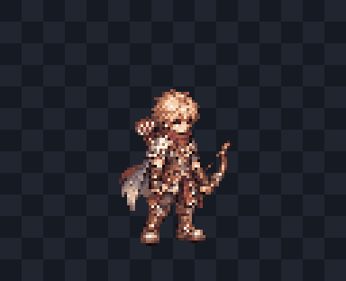
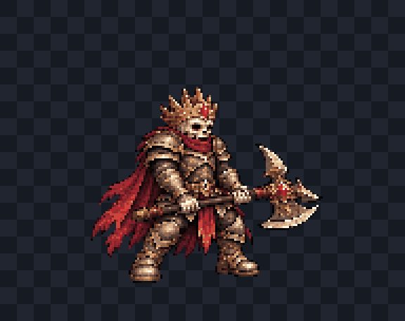
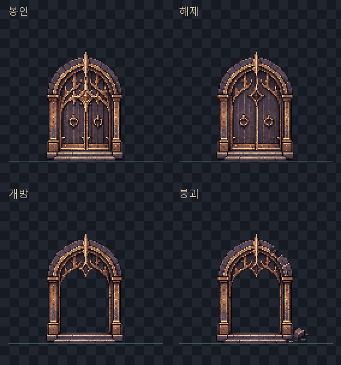
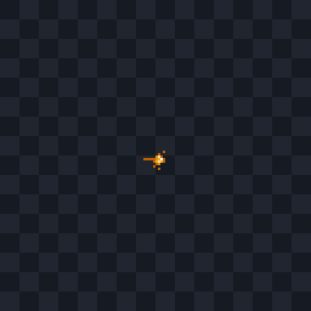
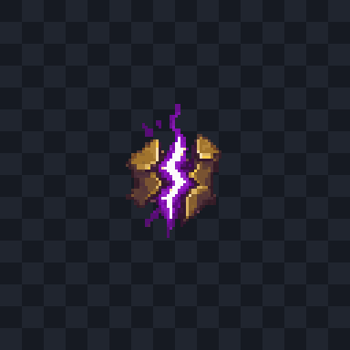
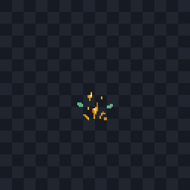
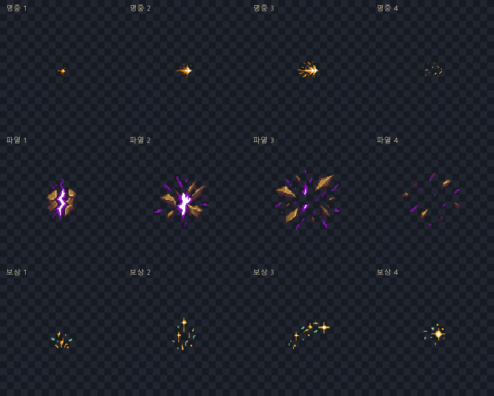

SPIREBOUND / FRAME PACKAGE 01캐릭터·문·이펙트, 같은 화면에서
검토용 4시트·28핵심 프레임입니다. 기존 주인공과 모르도의 해골형을 기준으로 제작했습니다. 아래는 배치·타이밍 시안이며 실제 게임플레이가 아닙니다. 중간 모션 프레임과 다른 보스 페이즈는 포함하지 않았습니다.
이미지를 읽는 중입니다.
논리 크기 1× 비교
가로로 스크롤해서 보세요. 주인공 몸체58px·모르도92.4px는 현재 표시 크기를 기준으로 삼았습니다. 큰 봉인문92px 높이는 제안값이며 일반문80×35 규격의 대체품이 아닙니다.
핵심 자세 재생 · 3× 확대
GIF는 핵심 자세를 이어 보는 느린 검토용입니다. 게임의 실제 공격 속도나 최종 모션 품질을 뜻하지 않습니다.
주인공 사격

피격·착지까지 6자세
모르도 공격

모르도 6자세
모르도 붕괴
몸체와 별도 이펙트를 분리했습니다.
문 상태

정면 큰 봉인문 시안입니다. 일반문 방향별 변형은 후속 범위입니다.
명중·파열·보상, 별도 레이어



이펙트 프레임 비교

제작 상태
선택 원본4장의 크기·투명 채널, 작은 크기용28프레임의 투명도·48색 한도·핵심 픽셀 셀 경계를 정적으로 확인했습니다. 게임 반영·실기기·성능·연속 동작 검증은 하지 않았습니다. 원본의 세부 질감과 일부 자세 차이는 후속 픽셀 정리·중간 프레임 제작이 필요합니다.
제작·제약 기록 · 좌표·기준점 · 출처·승인 상태 · 생성 프롬프트